Phase 2, round two · Icon concept 2 of 3 · October 28, 2026
Moving part
Each subject is built from two to four solid pieces held apart by one constant cut. The red piece is the one that moves: the lid lifting, the top stage rising, the door leaf swinging, the ballot going in, the second banknote changing hands. Charcoal holds the structure around it.
Proposal only. Nothing here changes a master. The creative director's stage 1 notes and the blind name test are applied first (section 3). Test 1, naming the icons blind, is the main session's to rerun on these masters.
1. Beside the best: Material Symbols at 24 and 48 px
Study
Each icon sits beside the nearest Material Symbols glyph, the Rounded style, filled, at weight 400, the closest Google set to a filled family. Material Symbols is Apache 2.0 and loads here through Google Fonts (D1-19). SF Symbols stays out of the file, since its license ties it to Apple platforms. Painted share is the inked share of the 24 px cell, measured from Chromium renders.
| Icon | Ours, 24 px | Ours, 48 px | Material, 24 px | Material, 48 px | Glyph | Ours, painted | Material, painted |
|---|---|---|---|---|---|---|---|
| Explain | unarchive | 26% | 48% | ||||
| Track | stairs | 31% | 48% | ||||
| Connect | join | 26% | 37% | ||||
| Act | door_open | 27% | 39% | ||||
| Ballot | how_to_vote | 34% | 31% | ||||
| Bill | description | 28% | 44% | ||||
| Testify | record_voice_over | 27% | 32% | ||||
| Housing | home | 28% | 36% | ||||
| Campaign money | payments | 27% | 40% | ||||
| Feedback loop | cycle | 17% | 22% |
At 24 px Material's filled glyphs paint 22 to 48 percent of the cell and these icons 17 to 34 percent, a little lighter, with one cut where Material uses an outline or a knock-out. Material draws for system tasks, so for three subjects its nearest glyph is a neighbor: unarchive for Explain, join for Connect and cycle for Feedback loop.
2. The idea and the red
The brand's central idea is the hinge, a promise followed by action. Here every subject has one part that moves, and that part is red. It nests against a Charcoal piece across the cut, so Charcoal draws most of its outline and the subject still reads with the red turned to ink or removed (the second and third drawings in each card). Rule 05.3 governs, as D2-01 words it:
"An icon's red accent counts as signature red when the icon stands alone, as an app tile, an avatar or a single feature icon. In a row or a menu, icons go one color and only the current one keeps its red."
Explain
Says: A thing opened so you can see inside.
The lid is red: it is the part you lift to see inside, turning on its hinge.
Track
Says: A decision moving up through stages.
The top stage is red: it is the stage the decision rises to next, lifting from its seat.
Connect
Says: Two halves and the ground between them.
The bridge is red: it is the ground that spans the gap and joins the two halves.
Act
Says: A door you can walk through.
The door leaf is red: it is the part you push to walk through. The node is its hinge.
Ballot
Says: A box with a slot and a marked paper going in.
The paper is red: it is your marked vote, on its way into the box.
Bill
Says: A page with a folded corner and lines of text.
The folded corner is red: it is the page being turned, the bill in motion.
Testify
Says: A person speaking at a microphone.
The sound is red: it is the testimony leaving the speaker. The person stays Charcoal.
Housing
Says: A house with a pitched roof and a door.
The door is red: it is the way in, the part a resident opens.
Campaign money
Says: Money changing hands.
The second note is red: it is the money changing hands, sliding out from behind.
Feedback loop
Says: Two nodes joined by a forward link and a return.
The return is red: it is the feedback, the link that brings the effect back to its cause.
3. What changed after the stage 1 review
Stage 1 on the left, as the creative director reviewed it, and stage 2 on the right, both at 96 px. The notes set a red ceiling of 25 percent for this concept, so a moving piece keeps its presence. Three changes depart from the notes and go back to the creative director: Connect's taller bar, Feedback loop standing upright, and Housing redrawn after the notes said to keep it.
| Icon | Stage 1 | Stage 2 | What changed and why |
|---|---|---|---|
| Explain | The lid is the size of the notch it left. It hinges on the corner nearest the node, lifts 0.75 units and turns 20 degrees, with the 1.5-unit cut along its hinge side. The blind test read the stage 1 drawing as an app icon with a notification badge. | ||
| Track | Three stages of equal rise and run climb from y 4 to 20, so the full-width slab is gone. The node rests in the joint between the first two stages. The red top stage takes the full rise and rests on a shelf one cut lower, which brings red to 15 percent. The blind test read a platform. | ||
| Connect | The bridge is a bar across a 5-unit gap, its ends seated in slots in both halves, the node knocked out at its center. The bar is 4.5 units tall where the notes asked for about 3, so the 3-unit knock-out keeps 0.75-unit walls. The blind test read a record button. | ||
| Act | Red falls from 48 to 22 percent. The leaf narrows to 3.5 units at its free edge, the node becomes its hinge pin, and a 2-unit Charcoal threshold runs under the opening. The full lintel stays and waits on Dustin's named approval. | ||
| Ballot | The slot moves to the box's top edge and the paper's lower third sinks behind the box's face. The paper narrows to 5 units, and its oval knock-out is 3 by 2.2 units. | ||
| Bill | The fold's top point sits 1.5 units below the page's top edge, so it reads as a fold. | ||
| Testify | The microphone moves 0.75 units toward the face, its head at mouth height. The sound ring between them sets the distance, so it stops short of the full unit. | ||
| Housing | Still a house with a pitched roof and a door. The body narrows to 13 units under 18-unit eaves and the door moves to the center, because the 16 px similarity check scored the stage 2 draft 0.68 against Ballot. The window goes. | ||
| Campaign money | A pair of banknotes replaces the hand and coin: a Charcoal note with its center disc knocked out, and a red note sliding out from behind it, turned 12 degrees. The front note rises to the field's center, which keeps it clear of Track and Ballot at 16 px. The blind test read a person on a bed. | ||
| Feedback loop | Two nodes on the vertical axis, a straight Charcoal forward link with a solid arrowhead, and a red return arc whose arrowhead enters the first node. The notes put the nodes on the horizontal center line; drawn that way it read as a face, so it stands upright. Red is 24.7 percent of its paint. |
4. Grid and craft rules
| Grid | Round one's 24-unit grid, 2-unit padding, live area 2 to 22. Keylines: circle 20, square 18, portrait 16 by 20, landscape 20 by 16. |
|---|---|
| Pieces | Two to four solid pieces per icon from the kit: square, rectangle, disc, half disc, quarter ring, stadium and 45 degree triangle. |
| Cut | 1.5 units in the display master, 2 px at 24 px, 1 px at 16 px, the same on every side of every piece. |
| Corners | Convex corners take a 1-unit radius in the display master and stay square in the hinted masters. Concave corners stay square. Arrowhead corners take half a unit, an optical correction, since a full unit blunts an acute point. |
| Counters | 3 units or more at 24 units. Two knock-outs sit under it and are flagged in section 12: Ballot's oval mark (2.2 units tall) and the cuts that set Bill's text lines and Campaign money's corner marks (1.5 units, the cut itself). |
| Node | 3 units across in the display master, with a bite of the node plus the cut around it, Direction A's 6-unit seat. It is ink in Explain, Track and Act and a Newsprint knock-out in Connect, where it falls on red. At 24 px it is a 4 px disc; at 16 px a 2 px square, with the bite widened so the square's corners keep a full cut. |
| Red | One piece, 12 to 25 percent of the painted area. It is the one piece allowed off the 90 degree grid, turned up to 20 degrees, and it moves no more than 2 units from the gap it left. |
| Weight | Ink and red together paint 24 to 32 percent of the field at 96 px, within 15 percent of the set's median. |
| Hinting | The 24 px master is the drawing redrawn with a 2-unit cut and square corners. The 16 px master is the display geometry scaled by 2/3, which turns the 1.5-unit cut into 1 px. Horizontal and vertical edges move to whole pixels, both sides of each cut together. Turned and curved edges stay true vectors. Feedback loop at 24 and 16 px and Testify at 16 px are drawn by hand in whole pixels. |
| Files | 20261028_Moving-Part-<Icon>-Display.svg, -24px.svg and -16px.svg, each with an -Open row-state twin. Paths ink and accent; the hinted open masters add an unfilled keyline. |
5. The ten icons at 16, 24, 48 and 96 px
At 16 px each image is the 16 px master, at 24 px the 24 px master, and at 48 and 96 px the display master, all at true size on Newsprint.
16 px
24 px
48 px
96 px
On White, 24 and 16 px
6. The 16 and 24 px masters, magnified without smoothing
Each image is a Chromium render at 1x, magnified 4 times with no smoothing, at rest and in the row state with its keyline. The red pieces that turn off the grid (Explain's lid, the second banknote, Testify's sound at 24 px) and the curved Charcoal pieces stay true vectors, so their edges carry gray pixels by design. Pixel fit counts the share of inked pixels that render crisp.
Explain
Pixel fit 0.76 at 24 px and 0.79 at 16 px. Smallest cut 1.9 px and 1.0 px.
Track
Pixel fit 0.96 at 24 px and 1.00 at 16 px. Smallest cut 2.0 px and 1.0 px.
Connect
Pixel fit 0.80 at 24 px and 0.70 at 16 px. Smallest cut 2.0 px and 1.0 px.
Act
Pixel fit 0.88 at 24 px and 0.96 at 16 px. Smallest cut 2.0 px and 1.0 px.
Ballot
Pixel fit 1.00 at 24 px and 1.00 at 16 px. Smallest cut 2.0 px and 1.0 px.
Bill
Pixel fit 0.95 at 24 px and 0.93 at 16 px. Smallest cut 2.0 px and 1.0 px.
Testify
Pixel fit 0.72 at 24 px and 1.00 at 16 px. Smallest cut 2.0 px and 1.0 px.
Housing
Pixel fit 0.89 at 24 px and 0.86 at 16 px. Smallest cut 2.0 px and 1.0 px.
Campaign money
Pixel fit 0.82 at 24 px and 0.68 at 16 px. Smallest cut 2.0 px and 1.0 px.
Feedback loop
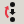
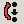
Pixel fit 1.00 at 24 px and 1.00 at 16 px. Smallest cut 2.0 px and 1.0 px.
7. In a row: idle and current
Idle icons go one color, and the cut still shows the moving part. The current icon keeps its red with a 1 px Charcoal keyline at 16 and 24 px on Newsprint, since red on Newsprint measures 2.96:1. The keyline stops a pixel short of any Charcoal piece, so at 16 px the 1 px cut stays open. The red piece moves one step further open, 1 px at 24 and 16 px, and the label goes bold. On Charcoal the red needs no keyline (4.49:1). On Prussian the icons are White with no red, and the current one shows by its open piece and its bold label.
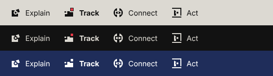
All ten idle, then all ten current, at 24 px
At 16 px
The open step in the display master, 2 units, at 96 px
The motion chapter animates this step. Campaign money's note lifts 1.6 units, short of the full 2, so its corner stays inside the live area. In the open state Act, Campaign money and Feedback loop carry more than 25 percent red; the ceiling applies to the icon at rest.
8. On all four surfaces
Ink measures 13.29:1 on Newsprint, 18.73:1 on White, 13.29:1 on Charcoal and 13.28:1 on Prussian. Red measures 2.96:1 on Newsprint, 4.17:1 on White and 4.49:1 on Charcoal, so on Newsprint no subject depends on the red piece's outer edge (test 2).
9. Holders and the app tile
Round one's geometry: the 24-unit field is 60 percent of the holder's side and the 20-unit live area half of it. The rounded square is a true superellipse, exponent 5, and it leads, after the two-tone reference. The circle serves avatars. Each holder comes in a Charcoal tile with a Newsprint icon and red, a Newsprint tile with a Charcoal icon and red (G1-09), and a Prussian tile in White with no red.
Square
Rounded Square (leads)
Circle (avatars)
All ten in the rounded square: Charcoal, Newsprint, Prussian
At 40 px, with the 24 px master at 1:1
The 1024 px app tile: glyph scale
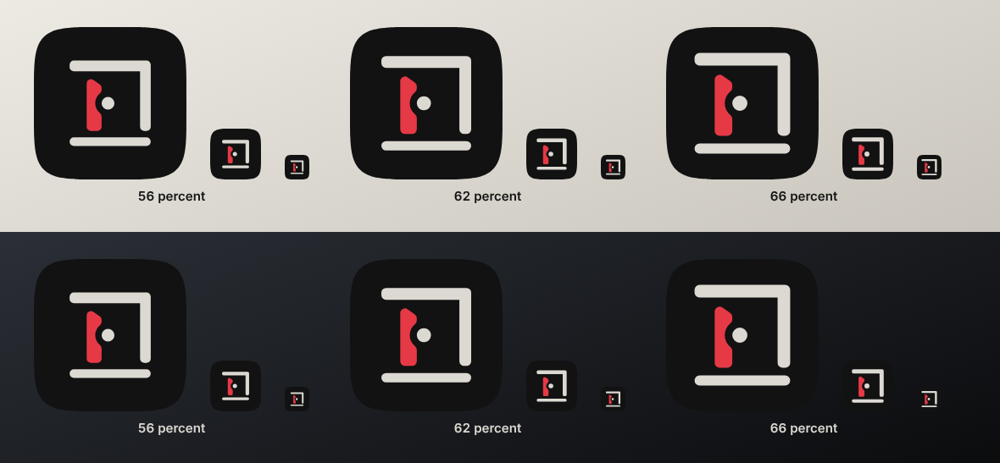
Chosen: 66 percent. At 29 px the lintel and the threshold still render as lines and the hinge pin as a dot; at 56 percent they thin to gray. At 180 px the 66 percent glyph keeps a margin of 17 percent of the side. Act carries the tile, as in round one: a door you can walk through is the brand's promise followed by action.
10. In use: the eight contexts
Each context is a Chromium render at device scale 1, with the board's fonts loaded from the guide's extracted files. The 16 and 24 px icons in them are the hinted masters; everything 48 px and up is the display master.
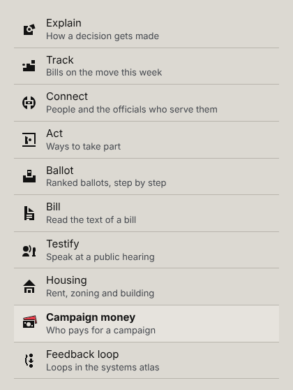
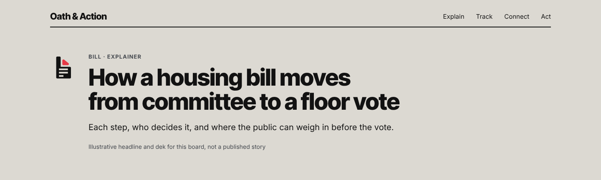
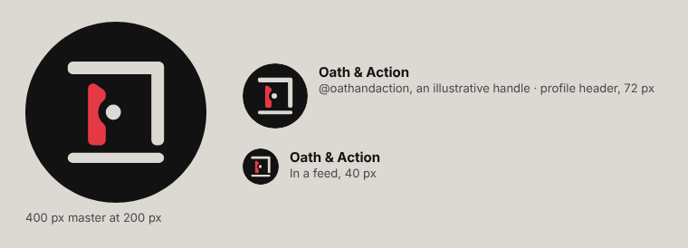
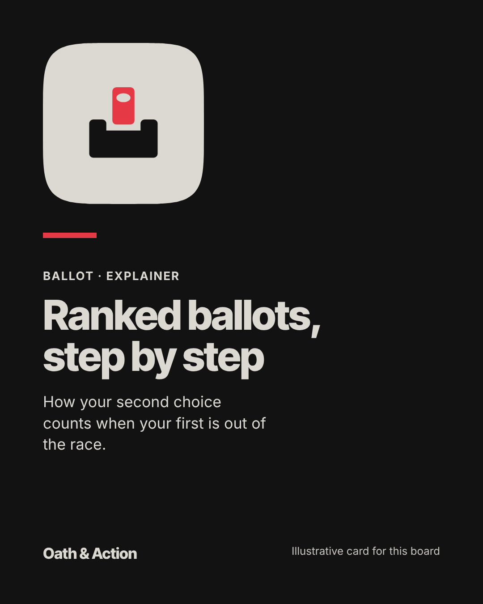
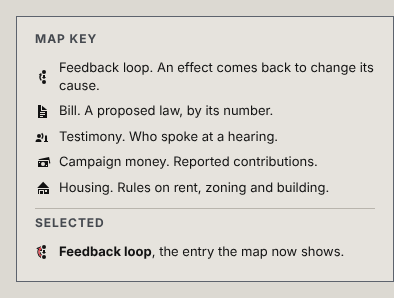
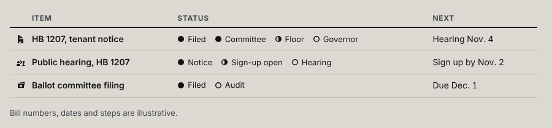
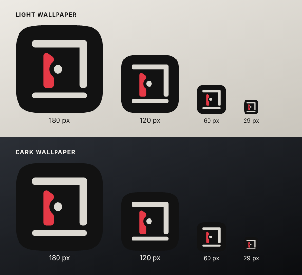
11. The four tests
Test 1. Name it
The main session reruns the blind name test on these finished masters; it is not run here. On the stage 1 sheet (P) this concept passed Bill, Housing, Ballot and Testify, failed Campaign money ("a person reclining on a bed"), read Feedback loop first as reload or sync and Explain as an app icon with a badge, and matched all four pillar marks after one reading of their stories, with Track read as a platform. Section 3 shows each redraw. Until readers can be tested (Q-13), this blind read stands in for them.
Test 2. Cover the red
For each size: as drawn, the red turned to ink, the red removed; then White on Prussian. The last column is a shape proxy for the naming: the Phase 1 similarity of the red-removed render to the nearest other icon in its full form, which should stay under 0.60. My reading by eye follows the table.
| Icon | 48 px | 24 px | 16 px | White on Prussian | Proxy over 0.60 |
|---|---|---|---|---|---|
| Explain | Under 0.60 at all three sizes | ||||
| Track | 16 px: 0.62 to Ballot, 24 px: 0.64 to Ballot, 48 px: 0.73 to Ballot | ||||
| Connect | Under 0.60 at all three sizes | ||||
| Act | Under 0.60 at all three sizes | ||||
| Ballot | 16 px: 0.62 to Track, 48 px: 0.67 to Track | ||||
| Bill | Under 0.60 at all three sizes | ||||
| Testify | Under 0.60 at all three sizes | ||||
| Housing | Under 0.60 at all three sizes | ||||
| Campaign money | 16 px: 0.65 to Ballot | ||||
| Feedback loop | Under 0.60 at all three sizes |
My reading by eye: with the red turned to ink every icon keeps its name at all three sizes. With the red removed, Ballot becomes an empty box with a slot, which may read as a tray or inbox, and Track loses its top stage and reads as two steps; both are where the proxy flags them. Campaign money without its red note is still one banknote, and Feedback loop without its return is a one-way link between two nodes, which keeps its nodes and loses the loop. The proxy misses that last one, which the main session's naming should decide.
Test 3. Hold up at 2x
At 192 px: one cut weight in every drawing (1.50 units everywhere, and 1.95 px and 1.00 px at the smallest in the hinted masters); counters at 3 units or more except the two noted in section 4; by eye, curves meet straight edges cleanly. Nine of ten sit in the weight band, all ten inside the center-of-mass limit, and every hinted master passes pixel fit (sections 6 and 12).
Test 4. Beside the best
Section 1 sets each icon beside Material Symbols at 24 and 48 px. Below, all ten in one color at 24 and 48 px, the way a row shows them, with no wordmark on the page. The weight spread at 24 px runs 17 to 34 percent of the cell; Ballot is the heaviest and Feedback loop the lightest, both outside 15 percent of the median.
12. Checks on every drawing
Weight is the painted share of the field at 96 px, with a band of 15 percent either side of the median (23.8 to 32.1 percent). Center of mass is the 96 px render's offset from the field's center, with a limit of 12 percent. Pixel fit is the crisp share at 24 and 16 px (D1-17, 0.60). Closest pair is the icon's highest similarity score against the other nine at 16 px (D1-16, under 0.60). Closest look-alike is its highest score against letters, the numeral pair "01", V5 marks and the Material Symbols system glyphs the name test bans; section 13 shows the ones over 0.60. Counters are the knock-outs' smallest sides in units.
| Icon | Weight | Red | Center of mass | Pixel fit, 24 / 16 | Closest pair | Closest look-alike | Counters | Holder safe area |
|---|---|---|---|---|---|---|---|---|
| Explain | 28.1% Pass | 23.1% Pass | −6.0, 6.3% Pass | 0.76 / 0.79 Pass | 0.57 Bill | 0.62 Material app badging, 16 px | None | Inside |
| Track | 30.6% Pass | 15.1% Pass | 5.4, 8.4% Pass | 0.96 / 1.00 Pass | 0.55 Ballot | 0.55 Material notifications, 24 px | None | Inside |
| Connect | 31.6% Pass | 15.4% Pass | 0.0, 0.0% Pass | 0.80 / 0.70 Pass | 0.53 Campaign money | 0.61 copyright sign, 16 px | 3.0 | Inside |
| Act | 27.8% Pass | 21.6% Pass | 3.8, −1.8% Pass | 0.88 / 0.96 Pass | 0.20 Feedback loop | 0.29 Material radio button checked, 24 px | None | Inside |
| Ballot | 31.0% Pass | 22.5% Pass | 0.0, 10.0% Pass | 1.00 / 1.00 Pass | 0.55 Track | 0.65 Material inbox, 24 px | 2.2 | Inside |
| Bill | 28.9% Pass | 12.9% Pass | −2.7, 6.5% Pass | 0.95 / 0.93 Pass | 0.57 Explain | 0.66 letter L, 16 px | 1.5 | Inside |
| Testify | 24.9% Pass | 13.0% Pass | −5.5, 9.8% Pass | 0.72 / 1.00 Pass | 0.48 Track | 0.41 Material cached, 16 px | None | Inside |
| Housing | 27.7% Pass | 13.2% Pass | 0.0, 1.6% Pass | 0.89 / 0.86 Pass | 0.56 Campaign money | 0.69 Material notifications, 24 px | None | Inside |
| Campaign money | 27.4% Pass | 23.8% Pass | 1.8, −2.5% Pass | 0.82 / 0.68 Pass | 0.56 Housing | 0.68 Material wallet, 16 px | 1.5, 5.5 | Inside |
| Feedback loop | 16.8% Fail | 24.7% Pass | −1.5, −0.6% Pass | 1.00 / 1.00 Pass | 0.52 Housing | 0.48 Material pause, 16 px | None | Round overshoot at 96 px |
Nine icons sit inside the live area of all nine holders at 40 and 96 px, and all ten sit inside the circle's safe radius (0.40 of the diameter). Feedback loop's nodes overshoot the live area by the 0.25 units a round form is allowed, which shows at 96 px. The avatar's ink reaches 37.5 percent of its diameter from the center. In the vector pixel-fit test of Phase 1 (axis edges and large curve extremes on whole pixels), the hinted masters score 0.95 at the lowest at 24 px and 0.73 at 16 px; the misses are the turned red pieces and arcs, which the test exempts only in part.
Contrast
| Pair | Ratio |
|---|---|
| Charcoal ink on Newsprint | 13.29:1 |
| Charcoal ink on White | 18.73:1 |
| Newsprint ink on Charcoal | 13.29:1 |
| White ink on Prussian | 13.28:1 |
| Red on Newsprint | 2.96:1 |
| Red on White | 4.17:1 |
| Red on Charcoal | 4.49:1 |
| Red against its Charcoal keyline | 4.49:1 |
| Charcoal keyline on Newsprint | 13.29:1 |
| Red on Prussian (not used) | 3.19:1 |
13. Look-alikes over 0.60
The Phase 1 measure compares filled silhouettes and blurred tone, so at 16 px any filled, bottom-heavy shape scores high against Material's filled bell. These scores say where to look, and the name test decides. By eye, the risks worth carrying to the main session are Explain beside app_badging at 16 px, the creative director's badge worry in another form, and Bill beside the letter L. Connect beside the copyright sign at 16 px repeats a round one watch. Housing, Ballot and Campaign money beside the bell, the inbox, the storefront, the pause bars and the wallet read as their own subjects to me at 24 px; the wallet is a fair second read for a banknote.
| Icon | Ours | Reference, 24 px | Against | Size | Score |
|---|---|---|---|---|---|
| Explain | Material app_badging | 16 px | 0.62 | ||
| Connect | copyright sign | 16 px | 0.61 | ||
| Ballot | Material inbox | 16 px | 0.61 | ||
| Ballot | Material notifications | 16 px | 0.63 | ||
| Ballot | Material inbox | 24 px | 0.65 | ||
| Bill | letter L | 16 px | 0.66 | ||
| Bill | | letter L | 24 px | 0.62 | |
| Housing | Material notifications | 16 px | 0.69 | ||
| Housing | Material storefront | 16 px | 0.63 | ||
| Housing | | Material notifications | 24 px | 0.69 | |
| Campaign money | Material notifications | 16 px | 0.64 | ||
| Campaign money | Material pause | 16 px | 0.61 | ||
| Campaign money | Material wallet | 16 px | 0.68 | ||
| Campaign money | | Material wallet | 24 px | 0.62 |
14. Rubric and recommendation
Master Brief section 6, 1 to 5, ship threshold 4, plus the seventh line. These are the maker's scores.
| Line | Score | Why |
|---|---|---|
| Craft | 3 | One cut weight and whole-pixel edges throughout, and the hinted masters pass pixel fit. Feedback loop is light, and the turned red pieces leave gray pixels at 16 px. |
| Clarity | 3 | Every stage 1 failure is redrawn, and the 16 px set clears the similarity check. Naming waits on the main session's rerun, and by my eye Ballot and Track lose their names with the red removed. |
| Brand fidelity | 4 | Direction A's skeletons, its node and its seat, drawn filled as approved, with the hinge as the idea and red used as Rule 05.3 words it. |
| Usefulness | 4 | A row state that changes shape as well as color, masters at three sizes, holders, an app tile and eight contexts. |
| Evidence honesty | 5 | Every number comes from a Chromium render or the vector files, and the misses are listed. |
| Accessibility | 4 | Ink measures 13:1 or more on every surface; red on Newsprint gets a keyline in rows, and no subject depends on red's outer edge. |
| Beauty and distinctiveness | 3 | The constant cut and the moving red give the set a look of its own, and the pillar marks are its best drawings. Several topic symbols are plain, and the set would not yet stop a client on the page. |
Recommendation. Run the name test on these masters. If two or fewer fail, carry Moving part forward and spend the next pass on craft and beauty, the two lines under 4: a heavier Feedback loop that keeps its red under the ceiling, a Ballot that keeps its name with its paper removed, and a closer study of Explain beside a badge at 16 px. If more than two fail, the concept stops here, as the brief sets.
15. Decisions for Dustin
- Act's full lintel (named approval, IC-04). Options: keep the full lintel, or draw the frame over the opening only. Recommendation: keep it. Round one measured 0.60 against Inter Tight 800 "01" without it and 0.42 with it; this 16 px master scores 0.07.
- Topic symbols carry the node only where it is part of the subject. This narrows Y5. In this concept no topic symbol carries the pillar node; Feedback loop's two nodes are its subject. Recommendation: approve.
- No line companion. This concept has no line cut, so it drops Y4 if chosen. Recommendation: decide it with the concept, since Overprint and Public sign answer it differently.
- Under 48 px a pillar mark always sits with its word. Studio proposal from the creative director's rules. Recommendation: approve; the menu row and the topic list show it.
For the creative director
- Connect's bridge is 4.5 units tall where the notes asked for about 3, so the 3-unit knock-out keeps 0.75-unit walls. A 3-unit bar would need a 1.5-unit knock-out, smaller than the other nodes.
- Feedback loop stands upright. With the nodes on the horizontal center line, as the notes set, it read as a face at 24 px. It also sits under the weight band at 16.8 percent painted, since a heavier drawing pushed its red past 25 percent.
- Housing is redrawn after the notes said to keep it: the 16 px similarity check scored the stage 2 draft 0.68 against Ballot. The narrower body under wider eaves and the centered door bring every pair under 0.60.
- Track's red block sits in the badge corner (x 16 to 22, y 2 to 8), attached across the cut to the stair below it; Campaign money's red note crosses it too. Neither stands alone there.
16. Tested and not tested
Tested
- Vector checks on all ten display masters at rest and open: painted share, red share, the smallest gap between pieces, overlaps, bounding box, center of mass and red inside the badge corner.
- Hinted masters at 24 and 16 px, at rest and open: the smallest cut between pieces in the vector files.
- Pixel fit (D1-17) from Chromium renders at 1x, at 24 and 16 px, at rest and open, and Phase 1's vector pixel-fit test.
- Similarity (D1-16) for all 45 pairs at 16 px and at 24 px.
- Look-alike scores against letters C, D, L and Z, the copyright sign, Inter Tight 800 "01", the V5 chain link and Signal Grid lockmark, a play button, a status light, and 17 Material Symbols glyphs at 16 and 24 px.
- Weight band and center of mass from 96 px renders, and the weight spread of a one-color row at 24 px.
- Red share in vector and at 96 px.
- Holder safe area for every icon in nine holders at 40 and 96 px, the 400 px avatar and the 1024 px app tile, from renders.
- Contrast ratios for every ink, red and keyline pairing (WCAG formula).
- The cover-the-red proxy (test 2) at 16, 24 and 48 px.
- The board's layout at 1440 and 390 px: horizontal scroll, elements outside the viewport, text under 13 px, images that fail to load, heading widows and tabular figures (icons_r2_moving_board_check.js).
Not tested
- Test 1, naming the icons blind: the main session reruns it on these masters.
- Any reader. No person has seen these icons (Q-13).
- Naming with the red covered (test 2) beyond my own reading; the proxy measures shape, not names.
- Whether the set reads as Oath & Action at 48 px with the wordmark covered (test 4), which needs a reader who has not seen the drawings.
- Rendering outside Chromium: Safari, Firefox, Windows ClearType and printed output.
- Retina and other device scales above 1x for the hinted masters.
- The app tile on a real device home screen and under the platforms' own masks.
- The motion chapter's animation of the open step.
- Rights for the reference sets; they were studied, never traced, and nothing from them is in the files.
Files
All in work/boards/phase-2/icons-r2/moving-part/. The masters: 60 SVGs, three sizes for ten icons, at rest and open. variants/: 440 color variants. holders/: 189 holder SVGs. app-tile/: the three glyph-scale tests, the chosen 1024 px tile and the test sheet. context/: the eight context renders, the 400 px avatar and the card tile. px/: the 1x renders magnified in section 6. stage-1/: the stage 1 display masters as reviewed. Measurements: 20261028_Moving-Part-Measurements.json. Notes: work/handoffs/phase-2/20261028_Icon-Concept-2-Moving-Part-Notes.md. Scripts: work/build/scripts/phase-2/icons_r2_moving_*.